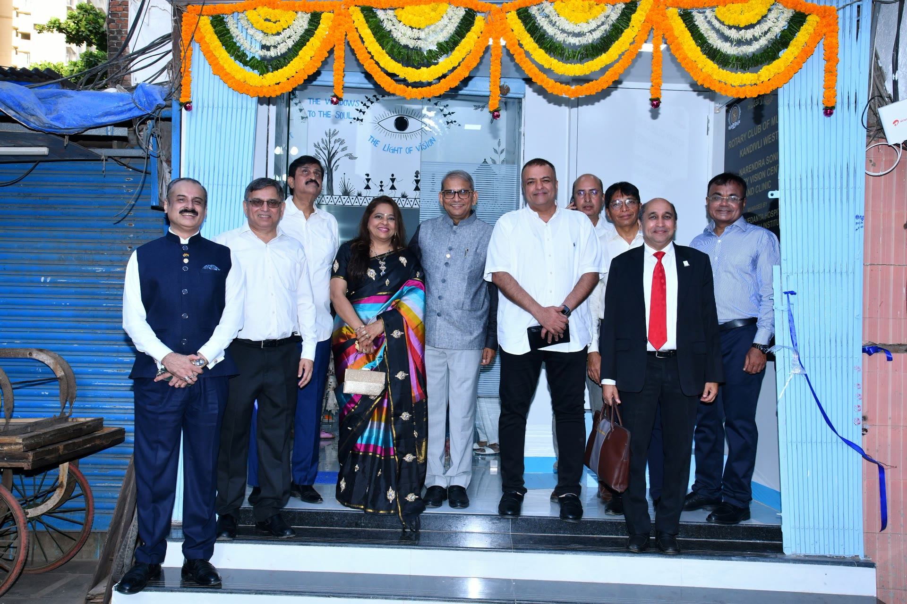

Club Projects
- 18Projects
- 59,895Beneficiaries
- ₹119.7 LAmount spent
- 5,735Man hours
 Community Service
Community ServiceBeach clean-up at Juhu
Volunteers cleared plastic and waste from two kilometres of shoreline.
 Community Service
Community ServiceDignity packs for girls
Menstrual hygiene kits and a health talk for girls in municipal schools.

Community ServiceVision centre opening
A permanent eye clinic with screening for the neighbourhood.
 Vocational Service
Vocational ServiceEnglish speaking course
A twelve-week spoken English course for schoolgirls.
 International Service
International ServiceMedical equipment for the civic hospital
Dialysis and monitoring equipment funded through a global grant.
 Community Service
Community ServiceFood kits for families
Monthly ration kits for families of daily-wage workers.
 Community Service
Community ServiceTree plantation drive
Two thousand saplings planted with residents and students.
 New Generation Service
New Generation ServiceMid-day meals for schools
Nutritious meals for children in four village schools.
 New Generation Service
New Generation ServiceGoodwill school opening
A new school building with classrooms, toilets and a library.
 International Service
International ServiceFlood relief for Dahanu
Supplies and temporary shelter for families after the floods.
 New Generation Service
New Generation ServiceNotebooks for students
Notebooks and school kits for the new academic year.
 Community Service
Community ServiceFood for Warkari pilgrims
Meals and water for pilgrims on the way to Pandharpur.
 Club Service
Club ServiceNew member orientation
A half-day welcome and training for members who joined this year.
 Club Service
Club ServiceClub leadership training
Training for club presidents, secretaries and directors.
- Club Service
- Club Service
Membership drive
Open house to introduce Rotary to professionals in the area.
- Vocational Service
Vocational excellence awards
Awards for nurses, teachers and workers who serve with distinction.
- Public Image
Rotary week on social media
A week of stories about club projects across the district.

No project matches your search.